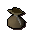
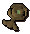

")
Runecrafting - The Abyss
Introduction

To gain access to the Abyss, you will have to perform a task for the Zamorakian Mage located north of Edgeville, by the river in the Wilderness. He will ask you to speak to him at the chaos altar in Varrock. This chaos altar is located in the south-east corner of Varrock, meet him there.
For more information read the Abyss section of the Manual.
Pouches
You get a small pouch during the Abyss. Pouches come in various sizes: giant, large, medium and small. These pouches allow you to carry rune essence in them; larger sized pouches require a higher Runecrafting skill in order to use them. Pouches help increase the number of rune essence you carry per trip. You are allowed to have one pouch of each size at any given time.
Pouches are obtained as drops from abyssal monsters. As you use the pouches, they degrade and carry less rune essence. Degraded pouches are still useful and you can speak to the dark mage at the centre of the Abyss to have the pouches restored to their full state.
Pouches are able to carry either pure essence or rune essence, but not both at once. You can empty your pouch and fill it with a different kind of essence if you wish. You can carry different essences in different pouches - e.g. pure essence in your medium pouch, and rune essence in your small pouch.
| Pouch | Level Required |
Number of Essence Held |
|  Small pouch |
1 |
3 |
![[image]](../../img/main/kbase/items/misc/medium_pouch.gif) Medium pouch |
25 |
6 |
![[image]](../../img/main/kbase/items/misc/large_pouch.gif) Large pouch |
50 |
9 |
![[image]](../../img/main/kbase/items/misc/giant_pouch.gif) Giant pouch |
75 |
12 |
Skill checks are located along the outer circle in the image above. Please be aware that they are not always in the same position.
Once through the skill checks, you can access the rifts in the central area of the Abyss. Using these rifts, you can exit to different Runecrafting altars. For example, you can exit through the fire rift to go to the fire altar. You do not have to be wearing a tiara or holding a talisman to enter a rift.
Each rift is marked with the appropriate rune symbol.
Please note: There is no rift in the Abyss for astral runes, if you wish to craft these, you will need to travel to Lunar Isle.
Elemental Talismans
 The abyssal monsters are also known to drop elemental talismans. An elemental talisman is fashioned in such a way as to allow it to be used at any of the elemental altars - air, fire, earth and water. The elemental talisman cannot be crafted into a tiara.
To use an elemental talisman, right-click on it and select the 'Locate' option. The elemental talisman will direct you to the location of the closest elemental ruin to your current position.
If you are between two or more mysterious ruins, it will not give any directions. In this case, move in a direction of your choice and then use the elemental talisman again. Preferably move towards the town where the altar you want to visit is located. For example, if you want to go to the Air Altar, travel towards Varrock.
Click here to view the Runecrafting FAQs

More articles in
Runecrafting
|
|
|
Further Help
If this article does not help you, you may find the following sections of the RuneScape site helpful:
|
|